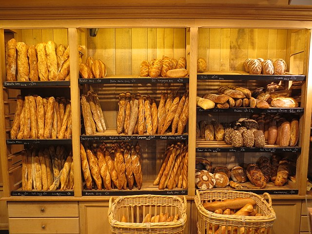

Le pain est l'aliment de base traditionnel de nombreuses cultures. Il est fabriqué à partir des ingrédients qui sont la farine et l'eau. Il contient généralement du sel. D'autres ingrédients s'ajoutent selon le type de pain et la manière dont il est préparé culturellement. Lorsqu'on ajoute le levain ou la levure, la pâte du pain est soumise à un gonflement dû à la fermentation.
Le pain est obtenu par cuisson de la pâte, au four traditionnel, ou four à pain, ou par d'autres méthodes (pierres chaudes par exemple). Une personne dont le métier est de fabriquer le pain (panification) est un boulanger. Le pain est commercialisé dans une boulangerie.
La farine provient principalement de céréales panifiables — blé (froment), épeautre ou seigle. On peut y adjoindre, en quantité modérée, des farines d'autres denrées non panifiables tels que le sarrasin, l'orge, le maïs, la châtaigne, la noix… Les céréales panifiables se caractérisent par la présence de gluten, ensemble de protéines aux propriétés élastiques, qui permettent d'emprisonner les bulles de dioxyde de carbone dégagées par la fermentation, qui permet la montée de la pâte, dite « pâte levée », et crée la mie.
Cette fermentation, dite fermentation alcoolique, produit outre le dioxyde de carbone, de l'éthanol, qui est vaporisé lors de la cuisson. Sans ajout de levain ou levure, le pain est dit azyme.
Des traces de pain sans levain ont été trouvées sur plusieurs sites datant de 30 000 av. J.-C. : des grains d'amidon provenant de rhizomes de roseau à massette et de fougère ont été identifiés sur des pierres assimilées à des pilons et des mortiers. Ces rhizomes étant toxiques, l'étude suggère que ces racines étaient pelées, broyées, puis cuites1.
Au Moyen-Orient, il est très probable que le pain ait été fabriqué avant l'apparition de l'agriculture. Des fouilles à Çatal Höyük (actuelle Turquie) montrent que, dans cette région au moins, le pain est apparu avant cette dernière, et même avant la poterie. Il était cuit, agrémenté de graines d'herbe de Sainte-Sophie, plus ancienne preuve de l'usage de condiments2. Encore plus anciens, les restes d'un pain plat de céréales sauvages, cuit il y a 14 400 ans sur le site natoufien de Shubayqa 1, ont été découverts en 2018 au nord-est de l'actuelle Jordanie3,4.
Au début de l’agriculture vers 8000 av. J.-C., dans la région du Croissant fertile, l'amidon provient essentiellement de grains de céréales. Au cours de l’Antiquité, avec l’avènement des civilisations méditerranéennes (sumérienne, égyptienne, grecque et romaine), l'histoire du pain devient intimement mêlée à l'évolution des outils, comme la meule à grains.
On attribue généralement l'invention du pain au levain aux Égyptiens alors que, des siècles plus tard, les Romains se nourrissaient encore de bouillie5. Grands observateurs de la nature, les Égyptiens avaient compris qu'ils pouvaient fabriquer du pain en mélangeant du grain écrasé, ou moulu, à l'eau du Nil, particulièrement riche en limons, ceux-ci renfermant des agents de fermentation utilisés encore trois millénaires plus tard. Cette découverte — laisser la pâte en attente, livrée à l'action des germes, puis oser la cuire —, donna aux habitants de la vallée du Nil un ascendant considérable sur les peuples mangeurs de bouillie et de galette5.
Les vestiges les plus reculés de pain remontent à l'époque prédynastique. Tout au long de l'histoire, les anciens Égyptiens ont placé des provisions dans les tombes pour assurer au mort sa subsistance dans l'au-delà. Les nécropoles de l'époque gerzéenne (-3650, -3400) ont conservé des restes de pain levé (Peters-Destéract6, 2005). Un repas funéraire, bien conservé dans la tombe Saqqarah 3477 de la deuxième dynastie (-2850, -2647), contenait une miche de pain triangulaire, faite de blé emmer7. Dans la tombe de Kha, à Deir el-Médineh (XVIIIe dynastie, -1550, -1292), on a trouvé un échantillonnage presque complet des pains utilisés à l'époque. « Ils sont de forme ovale, rebondis, à la croute luisante comme s'ils étaient sortis hier du four… Sont présents ceux de forme circulaire, plus ou moins aplatis, comme les pains actuellement en usage en Égypte et d'autres formes variées imitant aussi des éventails, des vases et des animaux comme le petit pain représentant une gazelle les pattes liéesN 1. »
Si ces vestiges sont des témoignages directs précieux du savoir-faire égyptien, les bas-reliefs et les fresques nous apprennent beaucoup plus sur les techniques de broyage du grain, du tamisage, de la préparation de la pâte au levain et de sa cuisson6. Par exemple, la légende d'une scène de boulangerie appartenant à un mastaba de Giza, dans laquelle la boulangère interpelle son compagnon, préposé au chauffage des fours, en ces mots : « Fais que ça chauffe bien, car la pâte a reçu le heza. » Il semble que heza, après s'être appliqué au levain, ait désigné par la suite la pâte levée.
En Mésopotamie, les galettes d'une pâte non levée sont cuites en les appliquant sur les parois brûlantes du four. L'épopée de Gilgamesh évoque la figure du boulanger qui pétrit, pour la déesse, « le pain cuit sous la cendre ». Le pain au levain ne fait son apparition qu'au cours du premier millénaire avant notre ère8. Sa préparation plus longue et plus délicate en fait un mets réservé pour certaines occasions.
Les Sumériens consommaient une variété impressionnante de biscuits (ni.har.ra) et de galettes, à base de pâte à pain levé. Prêtresses et scribes faisaient des libations et des sacrifices en offrant du pain aux divinités9. Plus de 200 variétés de « pains » ont été enregistrées dans un recueil de tablettes (Benno Lansberger) — selon les farines, les modes de pétrissage, les ingrédients (avec pistaches et figues sèches, raisins secs, etc.), cuissons et présentations.
La fabrication du pain ou panification est le procédé technique qui permet de transformer de la farine en pain. Elle demande la maîtrise de la fermentation et de la cuisson.
La technique de panification au levain, apparue en Égypte antique, a beaucoup évolué au cours des siècles. L'utilisation de levure de bière puis la production industrielle de levure de boulanger à la fin du xixe siècle ont favorisé le développement du pain obtenu par fermentation uniquement à la levure, comme les produits de type baguettes françaises et pain de mie. En Europe du Nord et en Allemagne, où la consommation de pain de seigle est importante, l'utilisation du levain est plus répandue car cette céréale est pauvre en gluten1.
Les caractéristiques des pains du monde varient considérablement d'une région à l'autre mais, dans ses aires d'origine, le Proche-Orient et l'Égypte, le pain est un aliment de base pour de larges populations, partageant sous ses diverses formes une procédure de préparation semblable : fabriqué à partir de farine de céréale pétrie avec de l'eau, pour donner une pâte qu'on laisse reposer et fermenter, le pain s'obtient finalement par cuisson à haute température.
Diverses galettes ont été préparées à partir de farine de racines de manioc (la cassave des Caraïbes) ou de rhizomes de fougères20 (en France en période de disette, Palma de Majorque, Sibérie) ou de la seconde écorce (cambium) du bouleau (Betula pendula, en Pologne, Suède et Finlande), ou de celle de chêne (Quercus cerris ou Q. ilex, en Bosnie). Ces procédés de fabrication étant très mal connus et, le plus souvent, en voie de disparition, nous ne chercherons donc pas à les classer.
Inversement, certaines céréales, comme l'orge au Tibet, ou le mil, en Afrique subsaharienne, servent d'aliment de base aux populations sans être préparées sous forme de pain. Ainsi, la tsampa, la farine d'orge grillée, qui est l'aliment par excellence des hautes vallées himalayennes et le mil, Pennisetum glaucum, qui est l'aliment de base de nombreuses populations de l'Afrique subsaharienne, sont consommés sous forme de bouillie, mais pas de pain ou galette. On trouve aussi, en Éthiopie et en Érythrée, entre autres, l’injera, une sorte de crêpe à base de teff ou de millet.
La typologie des pains du monde ci-dessous, inspirée de Hubert Chiron21, concerne les pains traditionnels, sans prendre en compte la profonde diffusion des pratiques alimentaires qui accompagne la mondialisation en cours.
Il s'agit de minces feuilles de pain préparées traditionnellement par les femmes à la maison. La pâte non fermentée, faite en général à l'origine de farine complète et d'eau, est étalée en une fine feuille, soit avec un rouleau, ou entre les paumes des mains. La cuisson peut se faire sur une plaque métallique ou sur la paroi d'un four. On se sert d'un fragment de feuille de pain pour saisir du bout des doigts un morceau de nourriture que l'on porte à sa bouche. La feuille peut aussi servir à envelopper divers ingrédients.
Ces feuilles de pain ont constitué la nourriture de base des campagnes de deux grandes aires culturelles : pains de froment pour les Empires ottoman, perse et moghol (monde indien), et galettes de maïs pour l'aire culturelle des Amérindiens de l'Amérique latine (tortilla, originaire du Mexique central, tanta du Pérou, arepa en Colombie et Venezuela, beiju au Brésil, etc.).
| pour 100g | Baguette courante française | Pain courant français 400g ou boule | Pain complet artisanale | Pain de campagne, pain bis | Pain de seigle et froment | Pain de mie |
|---|---|---|---|---|---|---|
| D'autres types de pain à venir... | ||||||
| glucides | 57,4g | 49,3g | 49,4g | 55,2g | 43,9g | 49,6g |
| dont amidon | 54,8g | 48,9g | 46,9g | 55,2g | 43,6g | 44,6g |
| dont sucres | 2,6g | 0,35g | 2,5g | 1,9g | 0,3g | 5g |
| eau | 27,2g | 37,6g | 33g | 30.5g | 32,3g | 33,3g |
| protéines | 8,6g | 7,4g | 8,4g | 8g | 7,2g | 7,8g |
"Une poule sur un mur qui picore du pain dur, picoti, picota, lève la queue et puis s'en va. […]"
"« Dansons la capucine
Y’a plus de pain chez nous ;
Y’en a chez la voisine
Mais ce n'est pas pour nous. […] »"
caractère inférieur à "<"
caractère supérieur à ">"
caractère et commercial à "&"